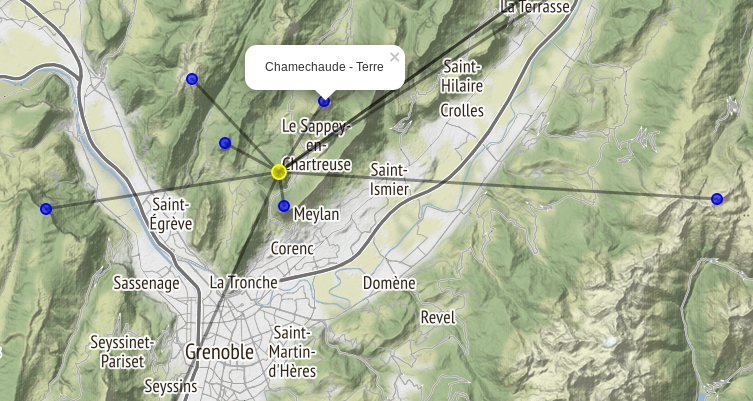

Recherche systématique des ensembles de sommets pouvant former entre-eux un système solaire à l'échelle.

Un exemple plutôt bien depuis l'Écoutoux (Chartreuse): 
Soleil : L'Écoutoux diamètre: 4217 cm
Planète Sommet Erreur(%) Distance(km) Diamètre
-----------------------------------------------------------------------------------------
Mercure: Saint-Eynard (1359m) 2.94 1.81 14.8 cm
Vénus: Aiguille de Quaix (1143m) 1.02 3.31 36.7 cm
Terre: Chamechaude (2082m) 0.00 4.53 38.6 cm
Mars: Rochers de Chalves (1845m) 0.33 6.89 20.5 cm
Cérès: La Sure (1643m) 1.34 12.71 3.0 cm
Jupiter: Pic de l'apparence (2714m) 0.03 23.58 423.7 cm
Saturne: Sommet de Pierre Blanche (2108m) 2.41 44.29 353.0 cm
Uranus: Aiguille du Grand Fond (2920m) 2.63 84.75 153.7 cm
Neptune: Grandes Jorasses/ Pointe Walker (4208m) 14.63 117.75 149.2 cm
Pluton: Grandes Jorasses/ Pointe Walker (4208m) 41.28 117.75 7.2 cm
Les notebooks sont ici uneplaneteausommet.ipynb.
Les sommets non visibles depuis le centre sont éliminés de la recherche. Le notebook is_visible.ipynb explique le calcul (avec les données topographiques).